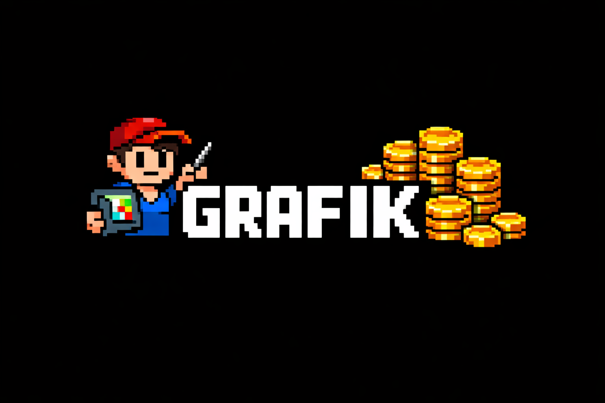

| Dzień | WP FINANSE | Poranek 6-14 | Popo 14-22 | OBECNI | WYDAWANIE | Odbiory | Urlopy |
|---|
Role: WP Finanse i Money trafiają do kolumn obsadowych (i do OBECNI). Wydawca trafia do kolumny WYDAWANIE. Można zaznaczyć kilka ról jednej osobie. Statystyki obok osoby: łącznie · WP·Poranek·Popo·Wydawanie w wybranym miesiącu. Zmień miesiąc strzałkami w zakładce Grafik żeby zobaczyć inne liczby.